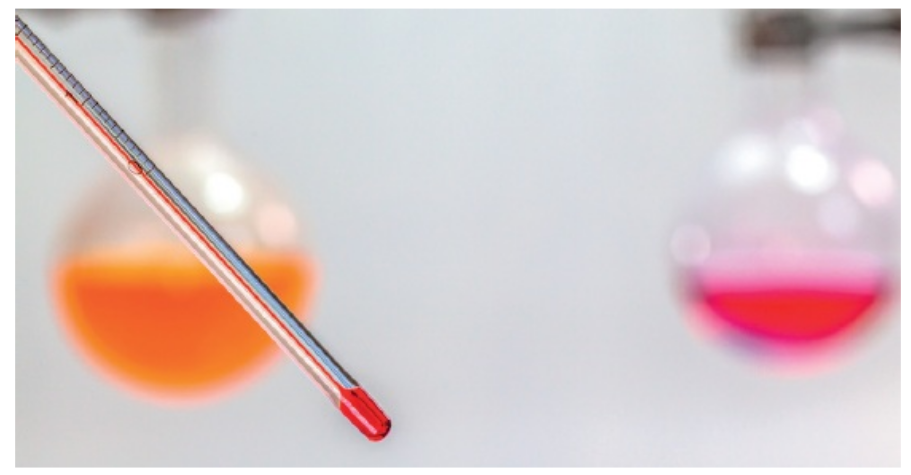

### 5.1: Moving Particles
* The **Kinetic theory of matter** says that matter is made of tiny particles constantly in motion
* Particles have kinetic energy because they are moving or vibrating
* In solids, particles vibrate about their fixed positions
* In liquids, particles vibrate a little and also move around a little
* In gases, particles move around a lot
5.1: Moving particles
In solids, the kinetic energy of particles is mostly vibration
5.1: Moving particles
In liquids, the kinetic energy of particles is found in some movement and some vibration
5.1: Moving particles
In gases, the kinetic energy of the particles is fully of movement
5.1: Moving particles
5.1: Moving particles
The kinetic theory of matter was first put forward for gases
In an ideal gas, the molecules only interact with each other in collisions, which are thought to be perfectly elastic
5.1: Moving particles
Brownian Motion was a key piece of evidence used to prove the kinetic theory of matter
Pollen grains in water showing Brownian Motion.
5.1: Moving particles
Nowadays, we look at the particles in smoke to see the effect of Brownian Motion
5.1: Moving particles
5.1: Moving particles
Movement of smoke particles in a smoke cell when viewed under a microscope
5.1: Moving particles
Brownian motion might look random but it is actually caused by microscopic collisions with particles that are too small to see
5.1: Moving particles
### 5.1: Moving particles
* It can also be used to explain the nature of **heat**
* The particles of solids and liquids are in constant motion.
* When heated they vibrate faster, so force each other a little further apart
* Kinetic theory uses the idea that as particles heat up **they gain more kinetic energy and move faster**.
5.1: Moving particles
The vibration in particles of a solid or liquid is because the particles have sort of potential energy
This potential energy between particles help them stay together
The more the internal energy, the faster the particles move
### 5.1: Moving particles
* If the *average internal energy per molecule* in one part of an object is greater than another part, then the energy will spread out until it is evenly distributed.
* This is known as **thermal interaction** and the movement of energy is known as **thermal energy** or **heat**
* If the temperature of a substance increases, it is because the *average internal energy* of its molecules has increased.
* Once all the particles of a substance have the same internal energy, we say it has reached **thermal equilibrium**.
5.1: Moving Particles
### 5.2: Temperature
> We have an intuitive concept of temperature as the ‘coldness’ or ‘hotness’ of a body, but it wasn’t until the 19th century that one of the greatest discoveries in physics related the concept of temperature to the random motion of molecules.
* The nature of **heat** can be explained by considering particles of solids and liquids are in constant motion.
* When heated they vibrate faster, so force each other a little further apart
* Kinetic theory uses the idea that as particles heat up **they gain more kinetic energy and move faster**.
### 5.2: Temperature
> Temperature is proportional to the average random kinetic energy of the molecules.
**Note:** This direct proportionality between temperature and the average random kinetic energy is only true for the Kelvin temperature scale.
5.2: Temperature
The vibration in particles of a solid or liquid is because the particles have sort of potential energy
This potential energy between particles help them stay together
The more the internal energy, the faster the particles move
Solids and liquids have some potential energy between particles, but gas particles are fully kinetic energy
### 5.2: Temperature
* If the *average internal energy per molecule* in one part of an object is greater than another part, then the energy will spread out until it is evenly distributed.
* This is known as **thermal interaction** and the movement of energy is known as **thermal energy** or **heat**
* If the temperature of a substance increases, it is because the *average internal energy* of its molecules has increased.
* Once all the particles of a substance have the same internal energy, we say it has reached **thermal equilibrium**.
5.2: Temperature
How is temperature measured?

### 5.2: Temperature
* Temperature can be measured with a thermometer, which is simply a device that has one property that changes in a predictable way as temperature changes.
* That property is volume in liquid-in-glass thermometers
* the liquid column changes its volume
* the length then changes since the cross-sectional area stays the same
* Properties other than volume can be used, for example, electrical resistance.
### 5.2: Temperature
* All matter has internal energy. This is an **energy store** and we measure it to find the **temperature** of an object.
* Energy is transferred from an object of higher temperature to an object of lower temperature.
* This is known as **thermal interaction**
* **Thermal equilibrium** describes a state where two or more objects have the same temperature and there is no net transfer of energy between them.
* **Heat** is energy that is transferred from one body to another as a result of a difference in temperature.
* Heat is **thermal energy** and is measured in Joules
### 5.2: Temperature
* When a thermometer is used to measure the temperature of a body it has to come into contact with the body.
* A **thermal interaction** takes place and energy is transferred until the thermometer and the body are at the same temperature.
* The thermal energy causes the particles of the mercury to move away from each other and the mercury will expand
* Once all the particles reach the same average internal energy, the mercury and the object are at **thermal equilibrium**.
### 5.2: Temperature
##### Celsius Scale
* The Celsius scale was devised by the Swedish scientist **Anders Celsius**.
* It has two fixed points:
* $0^\circ C$: the melting point of pure ice at atmospheric pressure
* $100^\circ C$: the boiling point of pure water at atmospheric pressure.
5.2: Temperature
### 5.2: Temperature
##### Kelvin Scale
* The Kelvin temperature scale starts from absolute zero, or −273 °C.
> $$\text{temp in K} = \text{temp in $^\circ$C} + 273.15$$